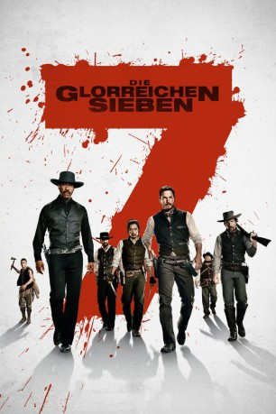

gesehen am 22.01.2017
gesehen am 22.01.2017Alternativ: The Magnificent Seven gesehen am 22.01.2017
 
 IMDB-Wertung: 7.0 / 10
IMDB-Wertung: 7.0 / 10  Metascore:
Metascore: 
Der fiese Geschäftsmann Bartholomew Bogue herrscht mit eiserner Kontrolle über die Stadt Rose Creek und verbreitet Angst, Schrecken und sogar Tod wie es im gefällt. Weil sie seine schreckliche Diktatur nicht länger ertragen können, wenden sich die Einwohner in ihrer Verzweiflung an sieben Outlaws, Spieler, Kopfgeldjäger und Revolverhelden und engagieren diese: Sam Chisolm, Josh Farraday, Goodnight Robicheaux, Jack Horne, Billy Rocks, Vasquez und Red Harvest. Noch während die illustre Truppe die Bewohner der Stadt auf eine gewalttätige Schlacht einschwören, finden die sieben Söldner heraus, dass für sie weit mehr als nur Geld auf dem Spiel steht.
Jahr: 2016
Dauer: 132 Minuten
FSK: 16
Land: USA Studio: Columbia PicturesTonspuren: DD5.1 - ,
Untertitel: Deutsch, Englisch,
Auflösung: 1080p (1920x800) Größe: 10444 MB
Genre: Action, Abenteuer, Western
Regisseur:  Antoine Fuqua
Antoine Fuqua
Drehbuch: Robert Harris
Soundtrack:
Darsteller:
 Denzel Washington als Chisolm
Denzel Washington als Chisolm Chris Pratt als Josh Faraday
Chris Pratt als Josh Faraday Ethan Hawke als Goodnight Robicheaux
Ethan Hawke als Goodnight Robicheaux Vincent D'Onofrio als Jack Horne
Vincent D'Onofrio als Jack Horne Byung-hun Lee als Billy Rocks
Byung-hun Lee als Billy Rocks Manuel Garcia-Rulfo als Vasquez
Manuel Garcia-Rulfo als Vasquez Haley Bennett als Emma Cullen
Haley Bennett als Emma Cullen Peter Sarsgaard als Bartholomew Bogue
Peter Sarsgaard als Bartholomew Bogue Luke Grimes als Teddy Q
Luke Grimes als Teddy Q Matt Bomer als Matthew Cullen
Matt Bomer als Matthew Cullen Cam Gigandet als McCann
Cam Gigandet als McCann Billy Slaughter als Josiah
Billy Slaughter als Josiah Carrie Lazar als Leni Frankel
Carrie Lazar als Leni Frankel Dane Rhodes als Sheriff Harp
Dane Rhodes als Sheriff Harp Ritchie Montgomery als Gavin David
Ritchie Montgomery als Gavin David Sean Bridgers als Fanning
Sean Bridgers als Fanning William Lee Scott als Moody
William Lee Scott als Moody David Kallaway als Turner / Blacksmith
David Kallaway als Turner / Blacksmith Griff Furst als Phillips
Griff Furst als Phillips Sean Boyd als Topper
Sean Boyd als Topper David Manzanares als Referee / Eddy
David Manzanares als Referee / Eddy Dylan Kenin als Cowboy
Dylan Kenin als Cowboy Kevin Wiggins als Another Cowboy
Kevin Wiggins als Another Cowboy Jackson Beals als One Eyed Lucas
Jackson Beals als One Eyed Lucas Vic Browder als Arcade Jones
Vic Browder als Arcade Jones John C. Coffman als Amador Miner , uncredited
John C. Coffman als Amador Miner , uncredited Francis Dobrisky als Cowboy Wrangler , uncredited
Francis Dobrisky als Cowboy Wrangler , uncredited Juan Gaspard als Rosecreek Townfolk , uncredited
Juan Gaspard als Rosecreek Townfolk , uncreditedDatei: X:\HD-Western-Collections\Glorreichen Sieben\Glorreichen Sieben, Die (2016, FSK16, 1920x800).mkv seit 13.01.2017
Festplatte: HD Eastern+Western
 Es gibt insgesamt 8 Filme in der Gruppe 'HD-Western-Collections\Glorreichen Sieben'
Es gibt insgesamt 8 Filme in der Gruppe 'HD-Western-Collections\Glorreichen Sieben'